"Photogram" Documentation by "Willian Ribeiro Angelo" v0.1.0
"Photogram" - Instagram Clone with Ionic Framework
Created: 08/2015
By: Willian Ribeiro Angelo
Email: photogram.ionic@gmail.com
Whatsapp: 55+ 11 9 4914-6353
Thank you for purchasing this project. If you have any questions that are beyond the scope of this help file, please feel free to email via my user page contact form here. Thanks so much!
Purchase Full Source Code
for only $ 49,00
Compre o Código Fonte Completo
por apenas R$ 150,00
Future Features
- Push Notification with Parse
- Full Profile with Tabs
- AngularJS Jasmine Tests
Table of Contents
- Features
- Screen
- Requirements
- Getting Started with Ionic Framework
- Clone Git Project
- Run and Debug On Browser
- Folders
- Add Platform
- Add Ionic Plugin
- Android Build
- IOS Build
- Deploy To Android device
- Deploy To IOS device
- Icon and Splash Screen
- How to edit a Project File
- Ionic Analytics
- Facebook Configuration
- Parse Configuration
- Test and Debug in Browser
- Chrome Inspector
- Safari Inspector
- Full Support
A) Features - top
Ionic is a powerful, beautiful and easy to use open source front-end framework built on top of AngularJs (a client-side javascript framework), Sass Syntactically Awesome Style Sheets Apache Cordova for developing hybrid (cross platform) mobile apps.
- PhoneGap / Cordova Full Hybrid App using AngularJS + Ionic framework + Parse
- Ionic framework open source front-end SDK for developing hybrid mobile apps with HTML5
- AngularJS Pattern Structure for Controllers, Directives, Filters, Services, Factories
- Complete and easy guide to help you understand and use this app.
- Full Support!
- Beautiful UI/UX with Animate Transitions!
- Easy style customization
- Easy work Multi language
- Angular Formly for generate forms with translation
- Facebook Integration Native (cordova) or web browser automatic detect
- Google Maps Integration with near share photos
- Camera and Image picker – Capture camera or access the phone gallery for edit and upload photos
- Ionic Integration
- Angular Cordova Plugins ngCordova
- User with Parse Integration
- Login
- Signup
- Form validation
- Forgot password
- Login or Create automatic with Facebook Integration native or browser
- Photogram
- List with like, comments and Affix
- Grid Photos with Search
- Map with Near Filter and Map Events
- Upload Photo before image picker or capture, after add Geolocation with photo description
- Share photo before uploading
- Build Hooks
- Inject HTML, CSS processed Sass, Javascript and Bower Libs automatic!
- Minify application within 95%
- Ionic upload minify application
- Ionic run and build optional minify application
B) Screens - top
Splash
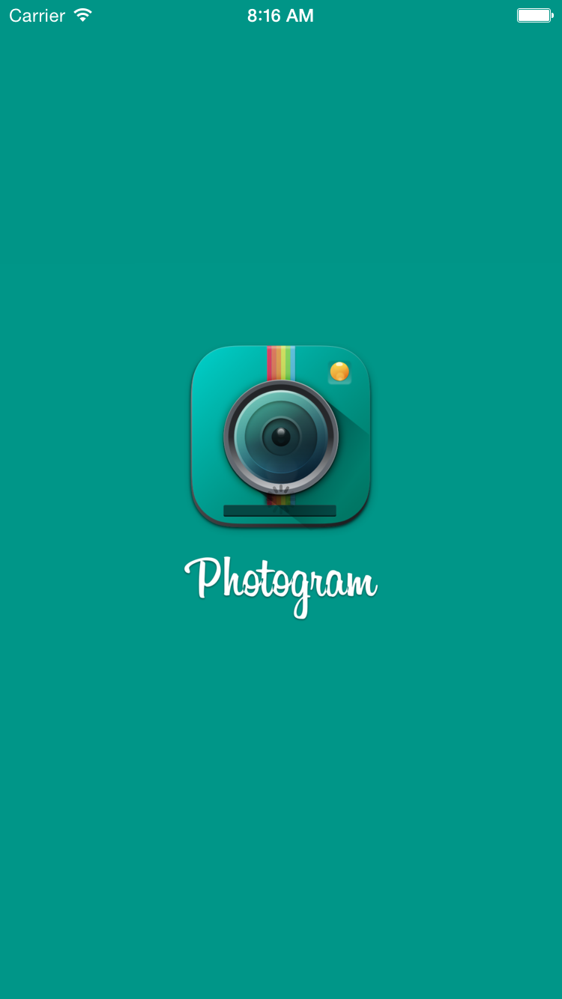Intro
Login, Register or Facebook Signin
Recovery Password
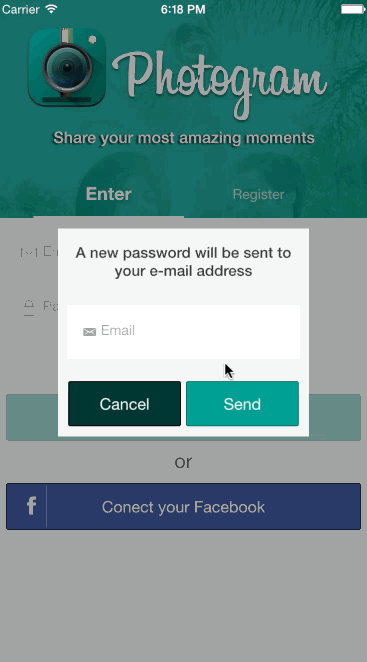Gallery Home
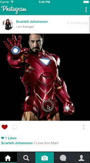Gallery Comment
Gallery Search Grid
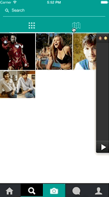Gallery Share Photo
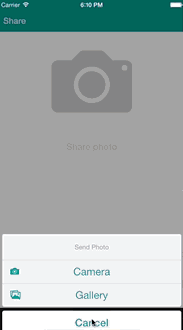Gallery Activity
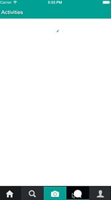Gallery Profile
C) Requirements - top
- You’ll need a basic understanding of : To get this up and running. I’ve made it as simple as possible but you’ll still need to know the basics.
- If you would like to learn or find more information go to Useful Resources and Sources and Credits
D) Install Ionic Framework - top
To run this Ionic Material Design project you have to install Ionic Framework by follow this step:
First, install Node.js. Then, Downloading Ionic and installing all necessary
dependencies for development by
open a new cmd.exe for windows or Terminal for
mac and run :
npm install -g cordova
npm install -g ionic
Note : For mac user don't forgot to add admin permission by :
sudo npm install -g cordova
sudo npm install -g ionic
Follow the
Android
and iOS
platform guides to install required platform dependencies.
More: Getting Started with Ionic
E) Clone Git Project - top
After purchasing the source code of Photogram, you will receive an email with an invitation to access through Gitlab if you already have an account on Gitlab just run the commands below, if not already, create an account and then perform the commands below
open a new cmd.exe for windows or Terminal for mac and run :
git clone https://gitlab.com/agenciafoccus/photogram-client.git Photogram
cd Photogram
npm install
ionic io init
ionic serve -l
F) Run and Debug On Browser - top
Use ionic serve -l to start a local development and run on browser.
Open a new cmd.exe for windows or Terminal for
mac and run :
cd Photogram
ionic serve -l
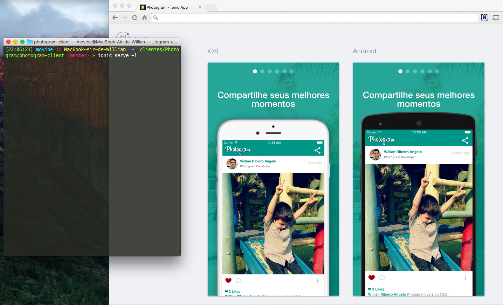
Important : Function that required device environment will not working on browser.
Learn More Option: Ionic Testing and Live Development
You can debug on browser by :
- Open google chrome
- Open debug console by right click and click inspect element
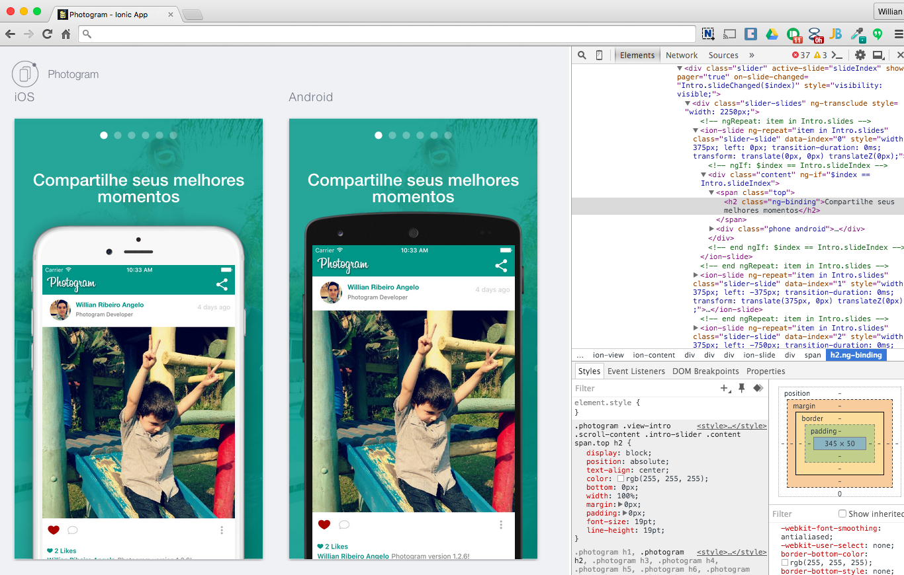
Learn More : Ionic Google Chrome Inspect Element
G) Folders - top
For use this application, you need to configure your app with Facebook and Parse.
| 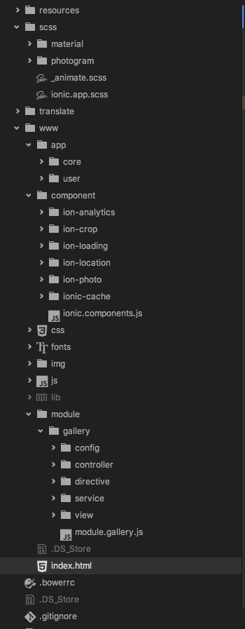 |
|
H) Add Platform - top
To run project on IOS / Android you need to add ionic platform by following steps.
Open a new cmd.exe for windows or Terminal for mac and run :
cd Photogram
ionic platform add ios
ionic platform add android
Ionic Framework will add platform to project for Build, Deploy or Emulate Application.
I) Add Ionic Plugin - top
You have to install below plugin for let the project work.
Install all plugin.
Open a new cmd.exe for windows or Terminal for mac.
cd Photogram
ionic plugin add com.ionic.keyboard
ionic plugin add cordova-plugin-console
ionic plugin add cordova-plugin-whitelist
ionic plugin add cordova-plugin-device
ionic plugin add cordova-plugin-statusbar
ionic plugin add cordova-plugin-splashscreen
ionic plugin add cordova-plugin-camera
ionic plugin add cordova-plugin-imagepicker
ionic plugin add cordova-plugin-geolocation
ionic plugin add cordova-plugin-file
ionic plugin add cordova-plugin-file-transfer
ionic plugin add https://github.com/phonegap/phonegap-facebook-plugin.git --variable APP_ID="APPID" --variable APP_NAME="APPNAME"
Now your project is ready to run.
J) Android Build - top
To build project to android platform you have to install android and java runtime to your computer by following
instruction of :
Ionic Framework walkthrough installing Cordova, Android
Or Youtube walkthrough of Ionic Framework channel : Youtube
walkthrough on installing Cordova, Android
After install success to build android you have to follow this step:
Open a new cmd.exe for windows or Terminal for
mac and run :
cd Photogram
ionic build android
Build result will paste at Folder platforms - This is a place of android and ios project after build ionic will paste it here.
K) IOS Build - top
To build project to IOS platform you can build it only mac computer by following step:-
Open a new cmd.exe for windows or Terminal for
mac and run :
cd Photogram ionic build ios
Build result will paste at Folder platforms - This is a place of android and ios project after build ionic will paste it here. - Add App Transport Security
iOS 9 introduces a new security feature that blocks non-HTTPS traffic in your app. However, this is a new feature that is only enabled for apps building with X Code 7 and iOS 9 SDK today. It will not break existing apps.
Since the changes above require recompilation, this will impact your development process and manfiest itself as a breaking change.
To fix, edit the MyApp-Info.plist file and add the contents of NSAppTransportSecurity by following step:
-
Open file at path Photogram/platforms/ios/Photogram/Photogram-Info.plist
by text editer and add add the contents of NSAppTransportSecurity
NSAppTransportSecurity NSAllowsArbitraryLoads <true/>
Before After 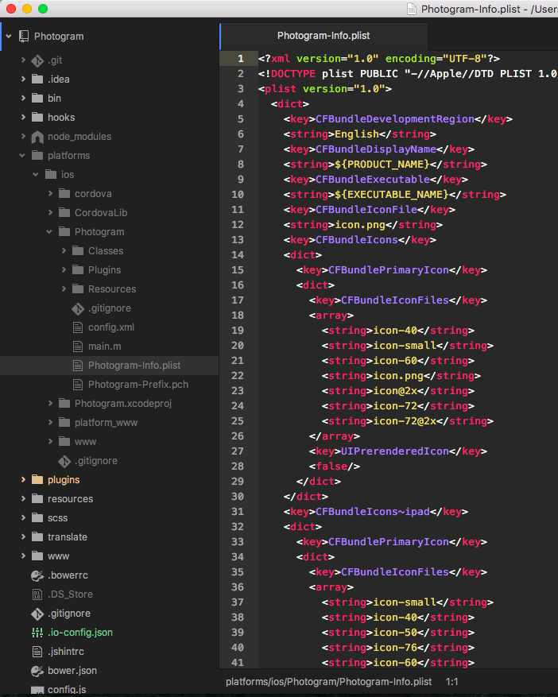 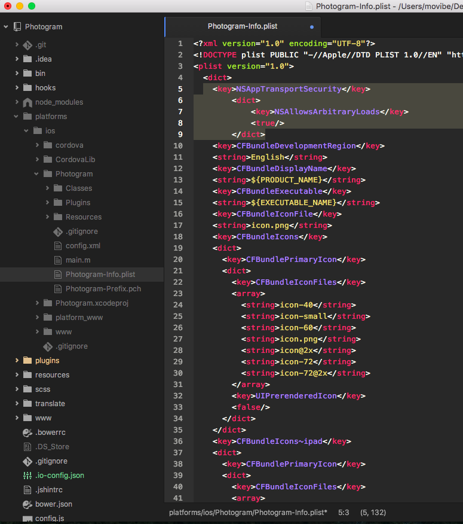
- Save file and close.
-
Open file at path Photogram/platforms/ios/Photogram/Photogram-Info.plist
by text editer and add add the contents of NSAppTransportSecurity
- Open your xcode by go to your project path. Photogram/platforms/ios/Photogram.xcodeproj. You can run it by select your IOS device or device emulator. and click play button.
- Important for Xcode 7. You have to set build option to disabled Bitcode
for using Google AdMob by following step :
- Open your xcode by go to your project path. Photogram/platforms/ios/Photogram.xcodeproj.
- Click Project Property
- Click Build Setting
- Change to Enable Bitcode to No
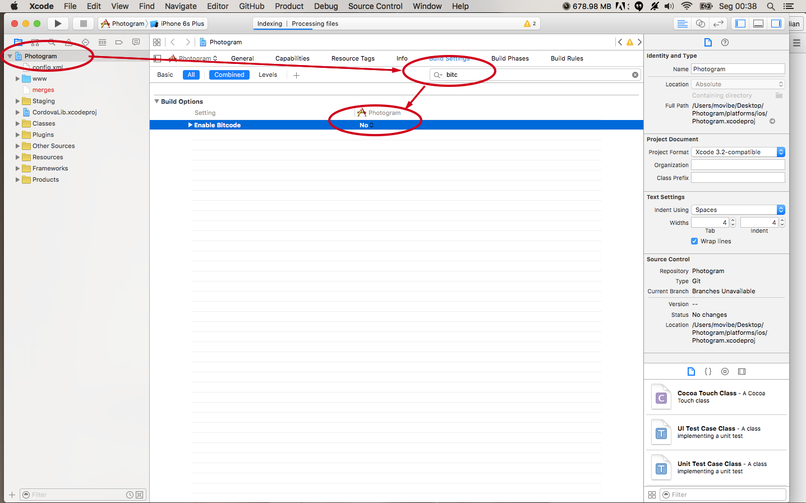
L) Deploy To Android device - top
To install this Ionic Material Design project to your Android device you have to follow this step:
Open a new cmd.exe for windows or Terminal for
mac and run :
cd Photogram
ionic run android
Important : You have to installing Cordova, Android to your computer.
Learn More : Android Build Sectiom
Note : You have to set your android device to debug mode and connect it to computer before run command.
M) Deploy To IOS device - top
To install this Ionic Material Design project to your IOS device you have to follow this step:
- Open a new cmd.exe for windows or Terminal for
mac and run :
cd Photogram ionic build iosNote : You have to connect ios device to computer before run command. - Open your xcode by go to your project path. Photogram/platforms/ios/Photogram.xcodeproj
-
Select your IOS device or device emulator.
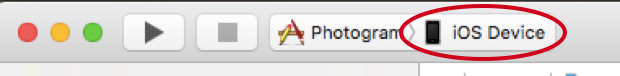 -
Click build button. It will install to your IOS device
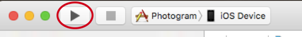
N) Icon and Splash Screen - top
To change Application Icon and Splash Screen Ionic Framework have tool for create it to all device size and platform by following step.
- Create icon by save an icon.png, icon.psd or icon.ai file within the resources
directory at the root of the project. The icon image's minimum dimensions should be 192x192 px, and
should have no rounded corners. Note that each platform will apply it's own mask and
effects to the icons. For example, iOS will automatically apply it's custom rounded corners, so the source
file should not already come with rounded corners. This Photoshop icon template provides the
recommended size and guidelines of the artwork's safe zone.
-
Create splash screen by save a splash.png ,splash.psd or splash.ai
file within the resources directory at the root of the project. Splash screen
dimensions vary for each platform, device
and orientation, so a square source image is required the generate each of various sizes. The source
image's minimum dimensions should be 2208x2208 px, and its artwork should be centered within the square,
knowing that each generated image will be center cropped into landscape and portrait images. The splash
screen's artwork should roughly fit within a center square (1200x1200 px). This Photoshop splash screen template
provides the recommended size and guidelines of the artwork's safe zone. Additionally, when the
Orientationpreference config is set to eitherlandscapeorportraitmode, then only the necessary images will be generated.
-
open a new cmd.exe for windows or Terminal for
mac and run :
cd Photogram ionic resources
Ionic framework will create image file all size and platform at resources/ios and android directory at the root of the project
-
Deploy to device new application icon and splash screen will change.
Deploy To Android device
Deploy To IOS device
Learn More : Icon and Splash Screen
O) How to edit a Project File - top
You can use below editors to edit project file on Windows and Mac :Ionic Cli Commands
| Command | Descriptions |
|---|---|
| $ ionic help | Enter either ionic --help or ionic help command(s) for more detailed task information. |
| $ ionic serve [options] | Testing in a Browser More Information |
| $ ionic platform [option] [platform] | Run and Emulate More Information |
| $ ionic resources [option]" | Icon and Splashscreen generate More Information |
| $ ionic info | If you are on a Mac, this should provide you information like the following. |
Gulp Commands
| Command | Descriptions |
|---|---|
| $ gulp | Compile dev structure |
| $ gulp inject | This command inject automatic bower dependecys, html, css and javascript files |
| $ gulp sass | Compile Sass file (scss/ionic.app.scss) and generate CSS file (www/css/ion.app.css) |
| $ gulp translate | This command use angular-gettext, it find string and code for generate translations for application, more instructions in Developer Instruction |
| $ gulp prod | Compile dev structure |
Bump Version
| Command | Descriptions |
|---|---|
| $ gulp bump --patch | PATCH ("patch") version when you make backwards-compatible bug fixes. -- patch: 0.0.2 |
| $ gulp bump --minor | MINOR ("minor") version when you add functionality in a backwards-compatible manner -- minor: 0.1.0 |
| $ gulp bump --major | MAJOR ("major") version when you make incompatible API changes -- major: 1.0.0 |
| $ gulp bump --prerelease | PRERELEASE ("prerelease") a pre-release version -- prerelease: 0.0.1-2 |
| $ gulp bump --setversion=2.1.0 | set aplication version |
Bash Commands
| Command | Descriptions |
|---|---|
| $ bin/build "platform" |
|
| $ bin/upload --note="New Version" |
|
| $ bin/run "platform" |
|
| $ bin/release "platform" |
|
| $ bin/folderprod |
|
| $ bin/folderdev |
|
E) Ionic Analytics - top
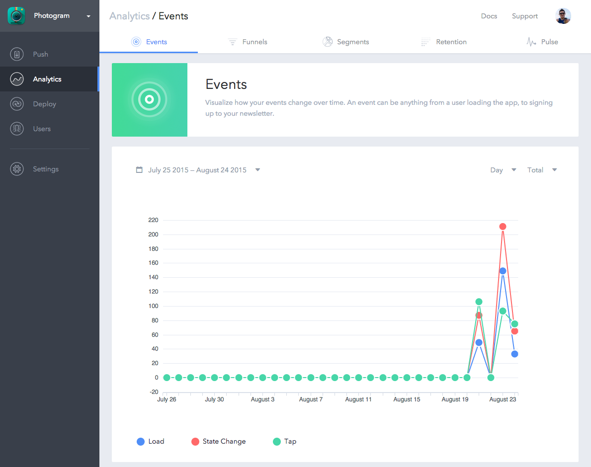Why is analytics important?
How many users are on your app right now? How many of those will use your app tomorrow, or next week? Without information, you have no way of telling if your app is being used in the ways that you expect.If you've completed the Installation Guide, your Ionic app is already collecting data. This will get you core data that you need to understand your userbase, like retention and user growth rates. In addition, you get a view of what individual users do as they navigate your app.
- $ ionic io init
Config files
For to change configuration, you need edit files
| File | Descriptions |
|---|---|
| .ion-config.json | Configuration with ionic app id and api key |
| ionic.project | Configuration with ionic app id |
E) Facebook Configuration - top
For use this application, you need to configure your app with Facebook and Parse.
Facebook : Acess Facebook Developper and create a app to http://developers.facebook.com
The Facebook Connect plugin to obtain access to the native FB application on iOS and Android. This plugin is not simple to install so make sure to check out the official docs.
Pre-Install
To use the FB plugin, you first have to create a new Facebook App inside of the Facebook developer portal at https://developers.facebook.com.
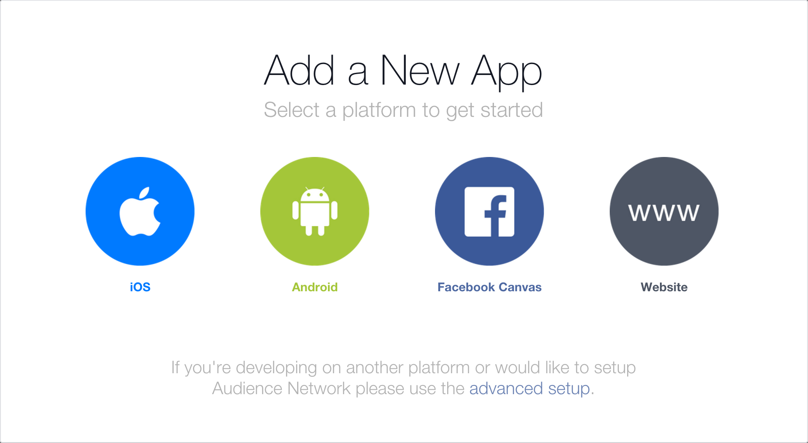Retrieve the App ID and App Name, which will be required to setup your cordova app and for web-development.
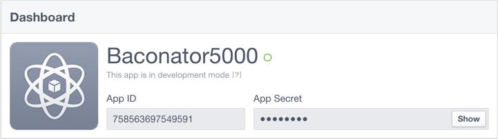Insert Config Keys in www/js/facebook.config
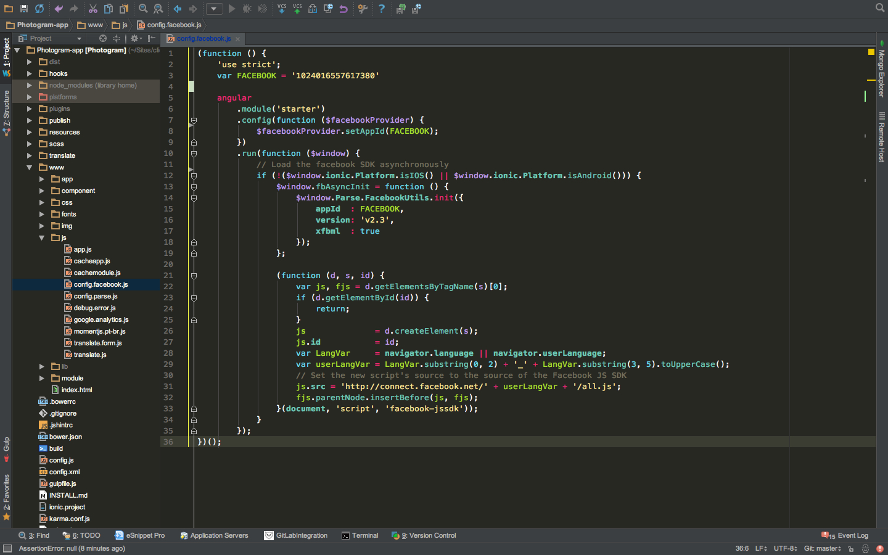iOS Install
Download the repo from https://github.com/Wizcorp/phonegap-facebook-plugin. Then type in the following commands in your Terminal.
F) Parse Getting Stared - top
For use this application, you need to configure your app with Parse.
Parse : Parse is a BaaS ( Backend as a Service ), wich allows you to manage your application ( users, messages, ... ), ans also to be able to send and receive messages. Create a free account to http://parse.com, and create a app. Get the AppKeys ( Application ID & Client Key ), and add to your project ( www/js/config.js ).
Access Parse Site

Create Account
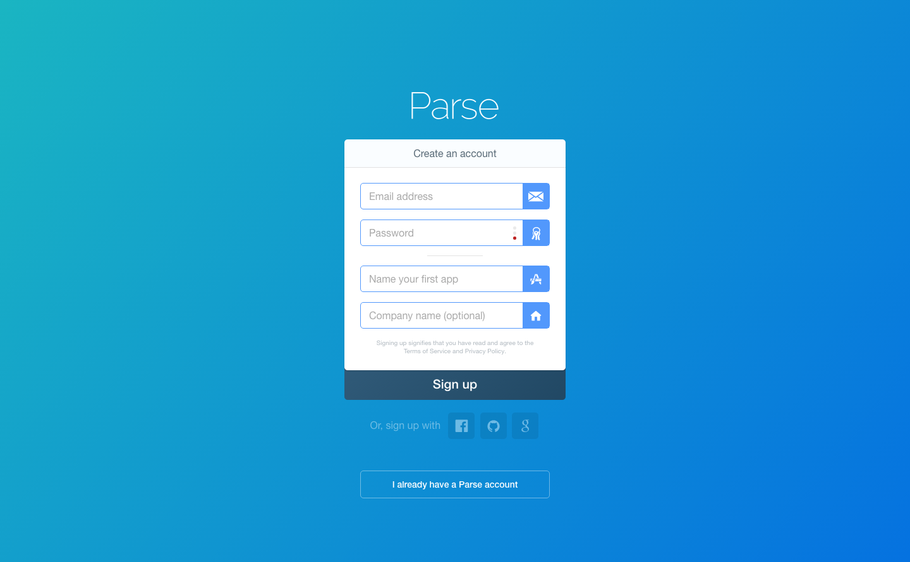Click for Data Option
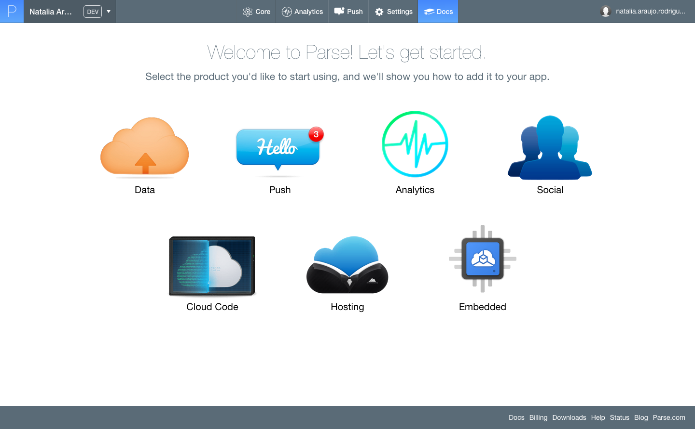Click for Web Option
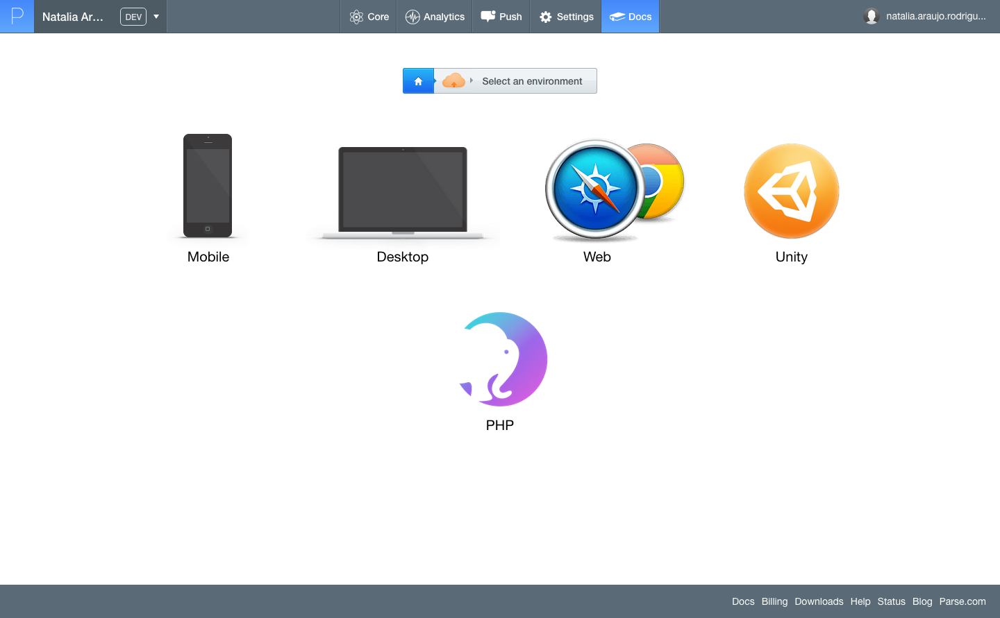Click for New Project Option
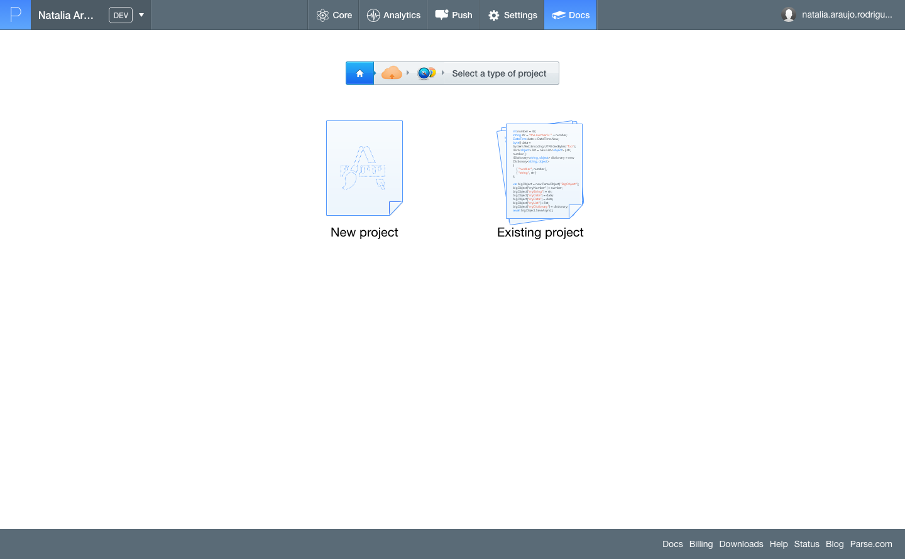Copy Javascripts Keys and modify config file in www/js/config.js
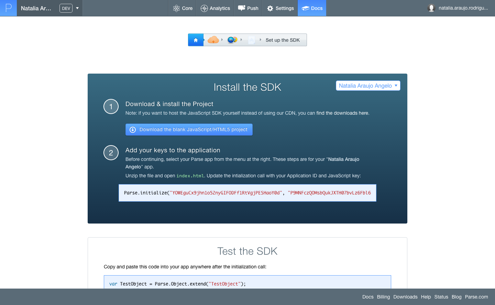Enter in Settings for Show Keys
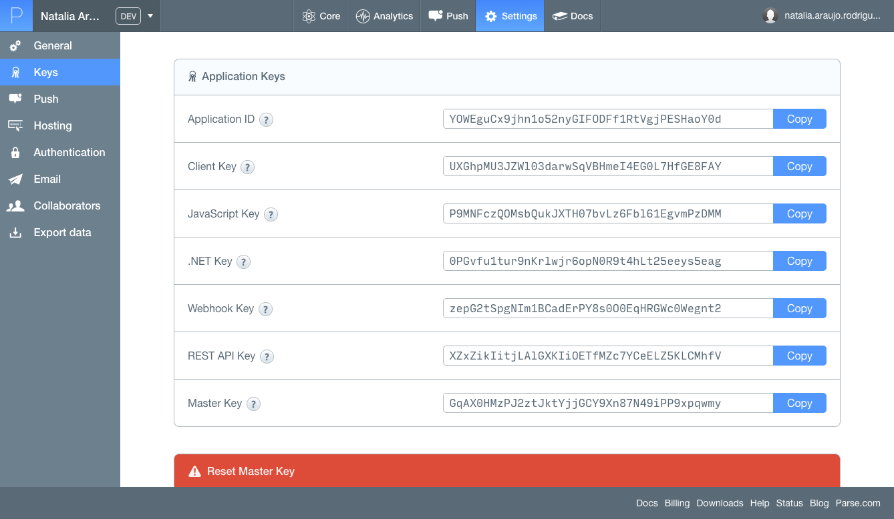Insert Config Keys in www/js/parse.config.js
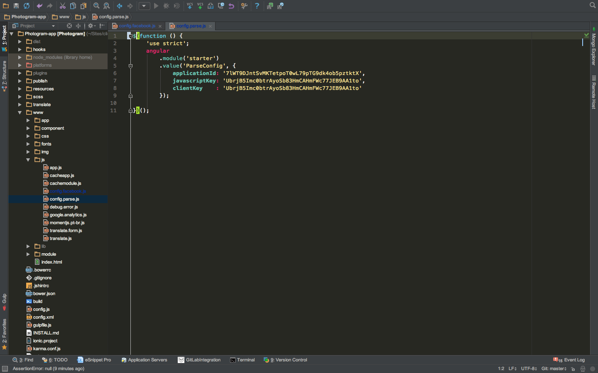Create Class User
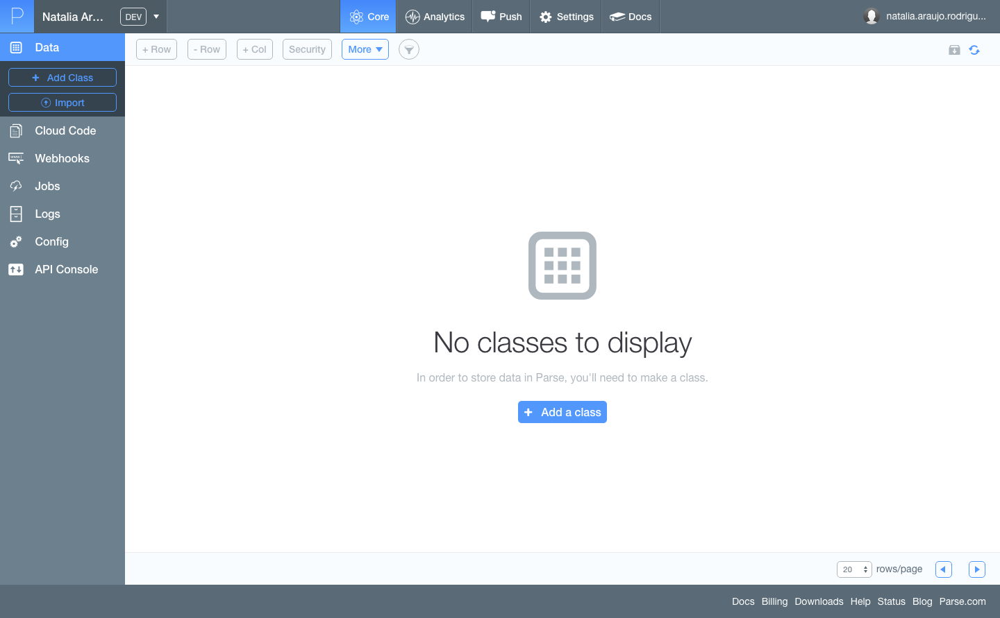Select User Class
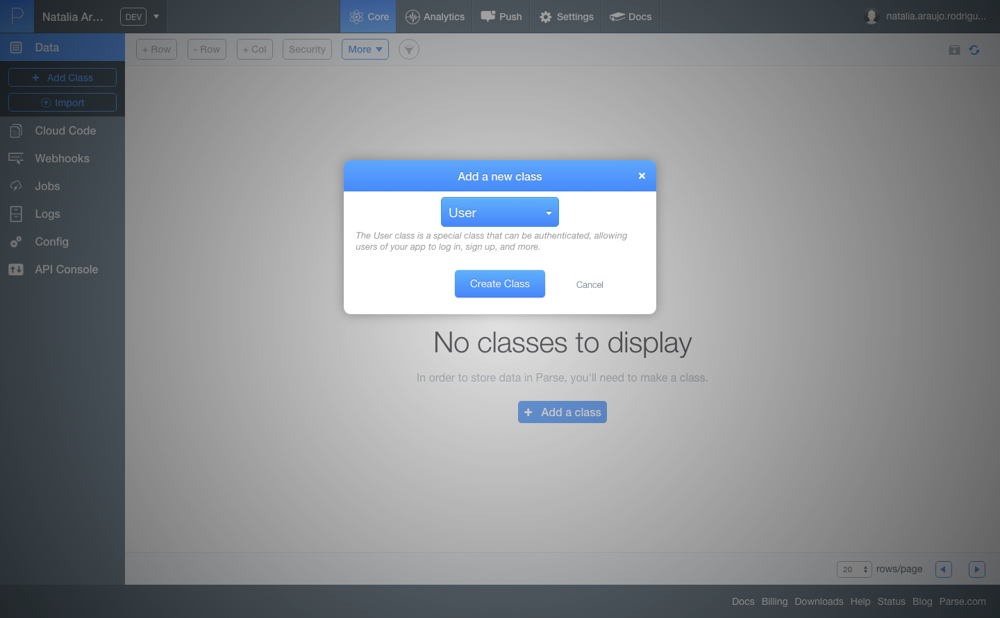After create Class, add column with table types specify
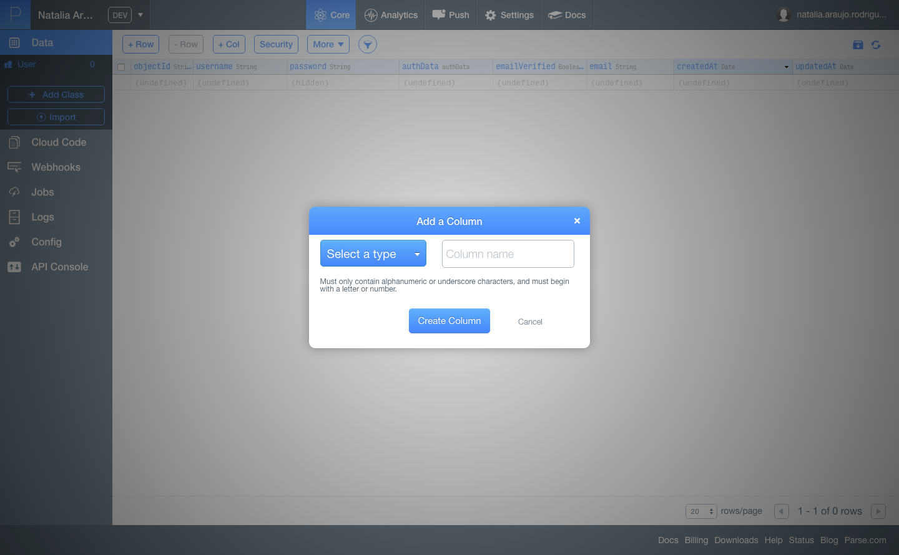Create User Class
| Input | Type |
|---|---|
| status | String |
| gender | String |
| img | File |
| language | String |
| phone | String |
| deviceCordova | String |
| deviceModel | String |
| devicePlatform | String |
| deviceUuiid | String |
| deviceVersion | String |
| String | |
| facebookImg | String |
Create UserFollow Class
| Input | Type |
|---|---|
| user | Poiter User |
| follow | Poiter User |
Create GalleryComment Class
| Input | Type |
|---|---|
| title | String |
| commentBy | Pointer user |
| gallery | Pointer Gallery |
| galleryId | String |
Create Gallery Class
| Input | Type |
|---|---|
| title | String |
| user | Pointer user |
| aprove | Boolean |
| comments | Relation GalleryComment |
| img | File |
| likes | Relation GalleryLike |
| location | Geopoint |

Create GalleryActivity Class
| Input | Type |
|---|---|
| user | Pointer user |
| gallery | Pointer Gallery |
| action | String |
Create GalleryFeedback Class
| Input | Type |
|---|---|
| user | Pointer user |
| gallery | Pointer Gallery |
| subject | String |
| title | String |
| status | String |
Create GalleryLike Class
| Input | Type |
|---|---|
| user | Pointer user |
| gallery | Pointer Gallery |
Create GallerySetting Class
| Input | Type |
|---|---|
| key | String |
| value | String |
Add rows in GallerySetting Class
| Input | Type |
|---|---|
| imageSaveAlbum | true |
| imageHeight | 640 |
| imageWidth | 640 |
| imageEdit | true |
| imageQuality | 90 |
H) Test and Debug in Browser - top
Now, since we actually have something to look at, we need to talk about the testing and development process for our app. There are four ways to test your app as you develop: in a desktop WebKit browser, in the iOS or Android simulator, in a mobile browser on your phone, or as a native app on the phone.
Desktop browser testing
Testing your app in a browser is as simple as running the serve command in your project's root folder.
- $ ionic serve
This will start a live-reload server for your project. When changes are made to any HTML, CSS, or JavaScript files, the browser will automatically reload when the files are saved.
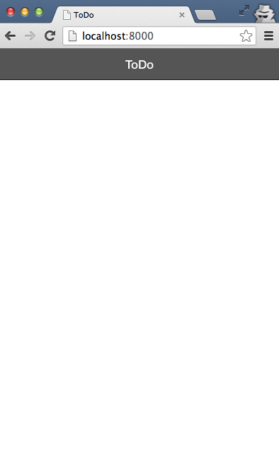Try dragging the center content to the right (works with the mouse as well) to expose the left menu. Smooth like
Simulator testing
You can also test right in the simulator using the cordova commands from the previous chapter. For example, to test in the iOS simulator, run:
- $ ionic build ios
- $ ionic emulate ios
Substitute ios with android for Android testing. If you want to get advanced, you can also open up the project file for a specific platform by opening the required XCode or Android Eclipse project in platforms/PLATFORM inside the root of your project. Then, you can build and test from inside the platform-specific IDE. Note: if you go this route, I recommend still working inside of the root www folder, and when you've made changes to this folder, run the command:
- $ cordova prepare ios
Which will update the ios specific project with the code from the www folder. Note: this will overwrite any changes you've made to the platforms/ios/www and other platform-specific folders.
More informationI) Chrome Inspector - top
So, you're testing out your Ionic app on an Android device and you wish you could use the Chrome Inspector just like you do with ionic serve.
Lucky for you, you can!
Just open up a new browser tab and enter chrome://inspect in the URL bar, you should see this:
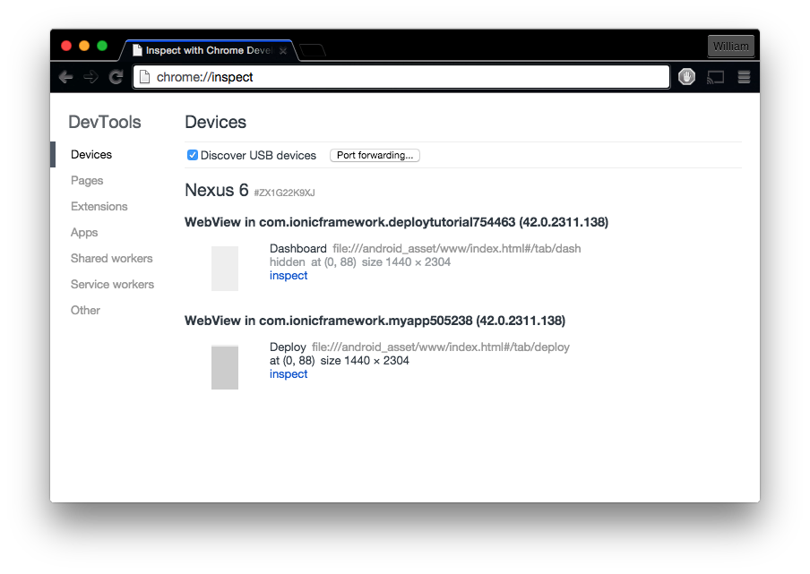Now, just click on the instance that you're debugging, and it will open a new window, with all the tools you get from a browser!
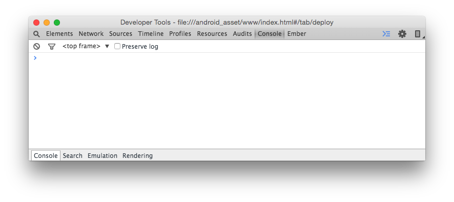 More informationI) Safari Inspector - top
So, you're testing out your Ionic app on an iOS device and you wish you could use the Safari Inspector just like you do with ionic serve.
Lucky for you, you can!
First, open up Safari -> Preferences and navigate to the 'Advanced' tab. Make sure the 'Show Develop menu in menu bar' option is selected. It should look like this:
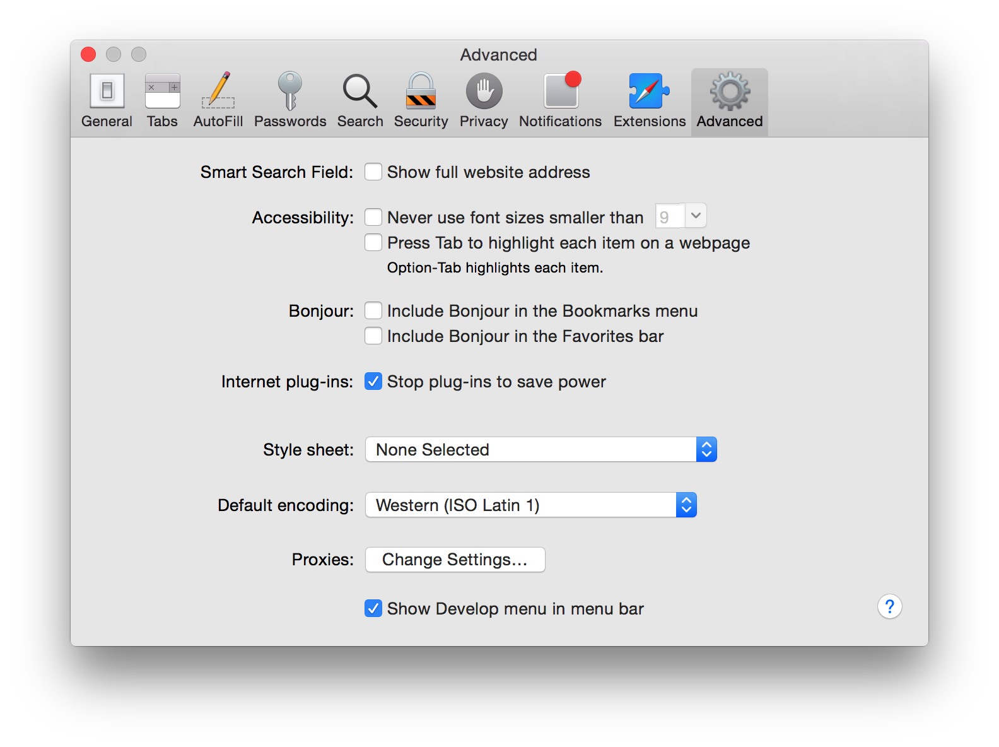Second, enable Web Inspector on your mobile device Settings->Safari->Advanced.
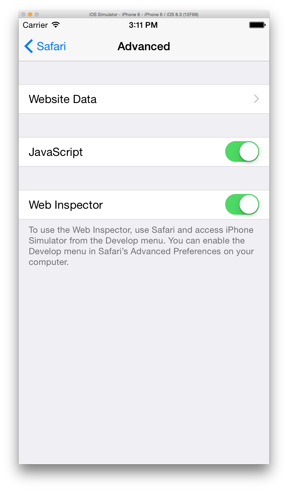Now, just run your app, and when you want to debug go to Develop in the Safari menu bar, then select index.html under your device:
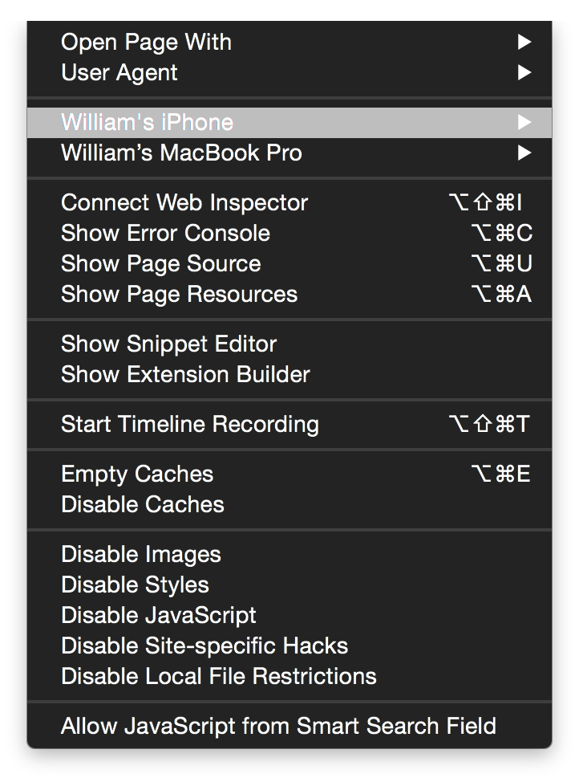You should now see a Safari Inspector window, with all the tools you'd have in a browser, enjoy!
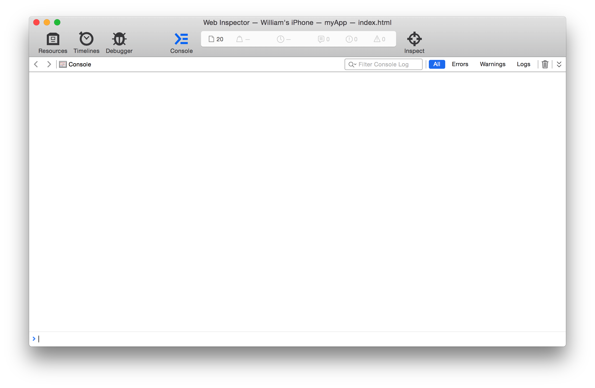 More informationG) Full Support - top
Email: photogram.ionic@gmail.com with the subject Photogram Question:
Gitter Chat
Thanks, Credits and Resources
- Angular JS
- Ionic Framework
- Parse
- Ionic Analytics
- Ionic Cli
- Ionic Blog
- Ionic Market
- Ionic Affix
- Ionic Icons
- ngCordova
- Animate.css
- Ionic Formly
- Angular Translate
- Angular Gettext
- Angular Facebook
- Angular Google Maps
- Angular Moment
- Simple Line Icons
- Cordova
- Sublime Text
- Webstorm
- Sketch
- Sketch App Resources
- Sketch Icon Resources
- Karma Runner
- Jasmine Javascript Tests
- Genymotion
- Apple Yosemite, Xcode, iOS Simulator, Macbook Air and iPhones!
- Alphanet, Google, Android and for all technologies
- Envato